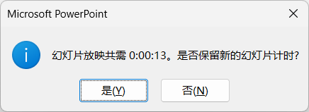

放映
Slide Show
设置
- 设置幻灯片放映
- 设置幻灯片的播放方式，如是否循环等
-
放映设置 - 排练计时
- 排练计时会开启幻灯片的自动播放
- 在排练过程中，设置每张PPT的放映时间，根据内容多少或重要程度确定讲述的时间
- 每张幻灯片的放映时间，更新到幻灯片自动切换的设置里
- PPT放映时，将按照设置的时间自动放映，比自动换片更加精准
- 取消排练计时，只需要取消自动播放即可
-
 排练计时 - 录制
- PPT放映时，录制整个过程，包括画面，音频和视频
- 各种演进比赛都用到